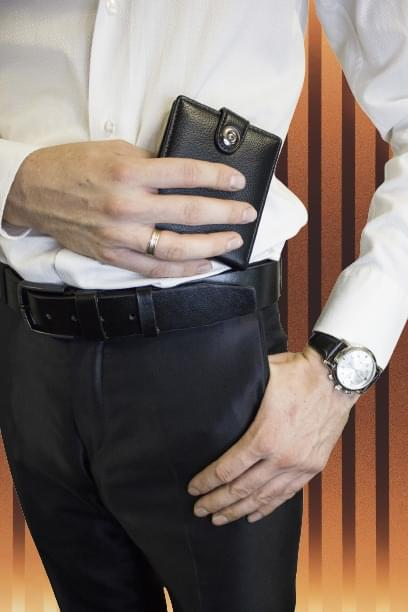
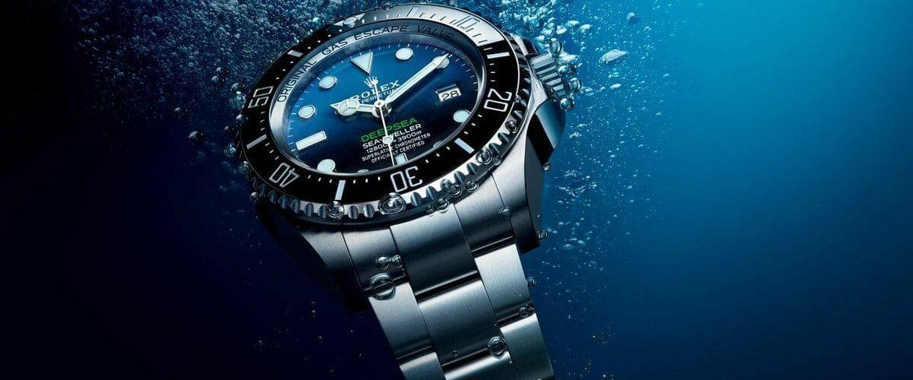
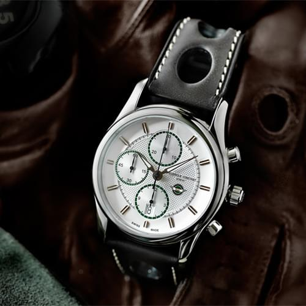
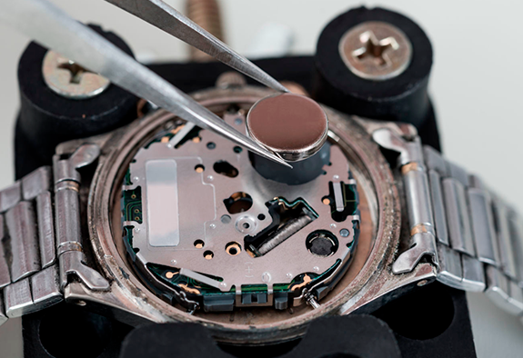

Корзина

Итого :
0
Оформление доставки
Инструкции и руководства
-
Общие правила эксплуатации механических часов Со временем изнашивается даже самый надежный механизм. Продлить жизнь наручных часов с механическим автоподзаводом поможет соблюдение нескольких простых правил по эксплуатации. При установке времени первоначально выдвиньте заводную коронку так, чтобы она была полностью вытянута, при этом нужно проследить, чтобы секундная стрелка застыла на шкале «12 часов». Затем вращая заводную коронку по часовой стрелке, установите текущее время. После этого верните коронку в нейтральное, то есть изначальное положение. Время установлено! Корректировать дату ни в коем случае нельзя в промежуток между 21.00 и 03.00 часами. Ваши элитные часы могут повредиться. При коррекции даты заводную коронку нужно вытянуть наполовину, затем вращая коронку установить дату и вернуть ее на первоначальное положение. Если у вас часы-хронограф, то есть часы, оснащенные дополнительной функцией, позволяющей измерять интервалы времени (секунды, минуты, часы) — включение режима хронографа происходит при нажатии кнопки «Старт», а отключение при повторном нажатии этой же кнопки. Все механические швейцарские наручные часы оснащены водонепроницаемостью, которая достигается за счет прокладок, завинчивающейся заводной коронки и задней крышки на винтах. Но от перепада температур, от воздействия пыли и пота на прокладки водонепроницаемость существенно снижается. Поэтому, чтобы уберечь уникальный механизм тонкой работы, любые оригинальные швейцарские часы стоит снимать перед посещением сауны, душа, плаванием и погружением под воду. Помните, что плавать можно лишь с дайверскими часами, водонепроницаемость которых начинается от 300 метров! Если у Вас механические часы с ручным автоподзаводом, не забывайте каждое утро их заводить. Для этого прокрутите заводную коронку по часовой стрелке до тех пор, пока не почувствуете сопротивление. Поддержать изначальный внешний вид достаточно просто – регулярно чистите часы, исключая кожаный ремешок, мягкой тряпкой, смоченной в теплом мыльном растворе. Ну а если соблюдать простое правило – не оставлять элитные швейцарские часы на солнце, во влажных местах и не подвергать сильным колебаниям температур, то часы будут радовать Вас своим утонченным дизайном еще долгие годы.
-
Влагозащищенность наручных часов Водонепроницаемость измеряют в метрах, атмосферах и барах. Один бар равен одной атмосфере, а одна атмосфера равна 10 метрам давления под водой. То есть при 1 баре (или 1 атм.) часы могут выдержать давление воды на глубине 10 метров. Таким образом, пометки могут быть такими, Water resistant 3 ATM; Water resistant 3 BAR; Water resistant 30 metеrs. РАССМОТРИМ ВСЕ 5 КЛАССОВ СТЕПЕНИ ГЕРМЕТИЧНОСТИ ЧАСОВ I.Надпись Water resistant. Часы с таким обозначением выдержат брызги и дождь, но не более того. II.Water resistant 3 ATM (30м.). Минимальная степень защиты, так же выдержат не большие нагрузки, дождь, случайное попадание не большого количества воды. Купаться в душе с ними опасно. III.Water resistant 5 АТМ (50 м.). Часы с такой пометкой вызывают больше всего спорных вопросов. Производители часов уверяют, что с ними можно плавать. Но часовщики не рекомендуют этот делать. Такой аксессуар с возможностью выдержки до 5 АТМ, могут противостоять попадению пота, дождя. А так же можно принимать душь и погружать в воду на кратковременный срок. IV.Water resistant 10 АТМ (100 м.). Эти часы предназначены для плавания, но не выдержат погружение с аквалангом. После того как часы попали под воду и находились в ней какое-то время, обязательно нужно их промыть проточной водой и высушить. Желательно, когда аксессуар находится под водой, не крутить и не трогать заводной механизм, это снижает риск попадания влаги. V. Water resistant 20 АТМ (200 м.). Этот аксессуар герметично укомплектован,такие часы рекомендовано использовать дайверам, но погружение не может быть дольше чем на 2 часа. Если нет значения Water Resistant или Water Resist, часы негерметичными и не смогу выдержать давление под водой, а также простого попадание воды. Существуют, конечно же исключения! В часах высшего класса на корпусе практически нет информации, т.е. надписи W.R. может и не быть. К таким аксессуарам прилагается инструкция и паспорт, в которых обязательно будет написано все о влагостойкости часов. Ненужно надеется на то, что такая функция, как водонепроницаемость будет вечна на вашем приборе. Но есть советы, как ухаживать за такими часами, для того, чтоб они прослужили намного дольше. Один раз в 2 года надо отвезти в сервисный центр для чистки и смазки резиновых уплотнителей. В варианте, если часы кварцевые их необходимо проверять на водостойкость каждый раз после замера батареи. Если в аксессуар попала вода, то сразу же нужно обращаться к мастеру. К сожалению, нет официального органа, который бы проводил испытания по одной форме и устанавливал форматы влагостойкости аксессуара. Оценивание разных производителей может отличаться. Поэтому не стоит в буквальном смысле воспринимать надпись «30 м» как разрешение погружать часы на тридцать метров под воду.
-
Хронограф Хронограф – это прибор, который не только измеряет, но и фиксирует время, а именно его отдельные промежутки. Самый простой хронограф – это секундомер, он не только считает пройденные с начала замера секунды, но и точно фиксирует их количество после финиша. Раньше хронографы выпускались как отдельные устройства, а сейчас их часто встраивают в наручные часы – это позволяет фиксировать с их помощью уже минуты и часы. Для этих целей достаточно только нажимать кнопки на боковой части часов: запускать, завершать и обнулять отсчет. Опять-таки, раньше встроенные в часы приборы были однокнопочными, но сегодня появились женские и мужские часы с более сложным механизмом – например, сплит-хронографом с двумя стрелками. Они позволяют одновременно следить за разными событиями, и фиксировать их продолжительность по отдельности. В управлении данными приборами участвует уже три кнопки: за счет этого одну из стрелок можно останавливать раньше. Также востребована функция flyback – обнуление и новый старт за одно нажатие. Хронограф — это одно из самых популярных и классических усложнений наручных часов. Его главное и основное предназначение — измерять измерять определенные промежутки времени одновременно с индикацией основного времени.
-
Батарейки Чтобы поставить новый элемент питания придется разобрать устройство и вытащить изношенный источник тока. Желательно сделать это до того, как потечет электролит. Подобное может произойти из-за плохого качества накопителя тока или по причине долгого нахождения элемента в часах. Например, если батарейка села и находится в них по нескольку лет. Неиспользуемые батарейки тем не менее склонны к потере заряда со временем. Объем этих потерь зависит от условий хранения и типа батареек. Литиевые батарейки как правило имеют напряжение 3 Вольта (и большие размеры). При температуре 21 градус потери для оксид-серебряных и алкалиновых батареек находятся в пределах 10%, а для литиевых составляют около 2% в год. Определение нужного типа батарейки. Различные производители применяют различные способы маркировки элементов питания, в добавок, как мы написали выше, алкалиновые батарейки могут быть заменены аналогичными по размеру оксид-серебряными. В связи с этим если Вы держите в руках свою старую батарейку и Вам нужна новая, вопрос о том, какую именно выбрать тем не менее может не иметь такого уж простого ответа.